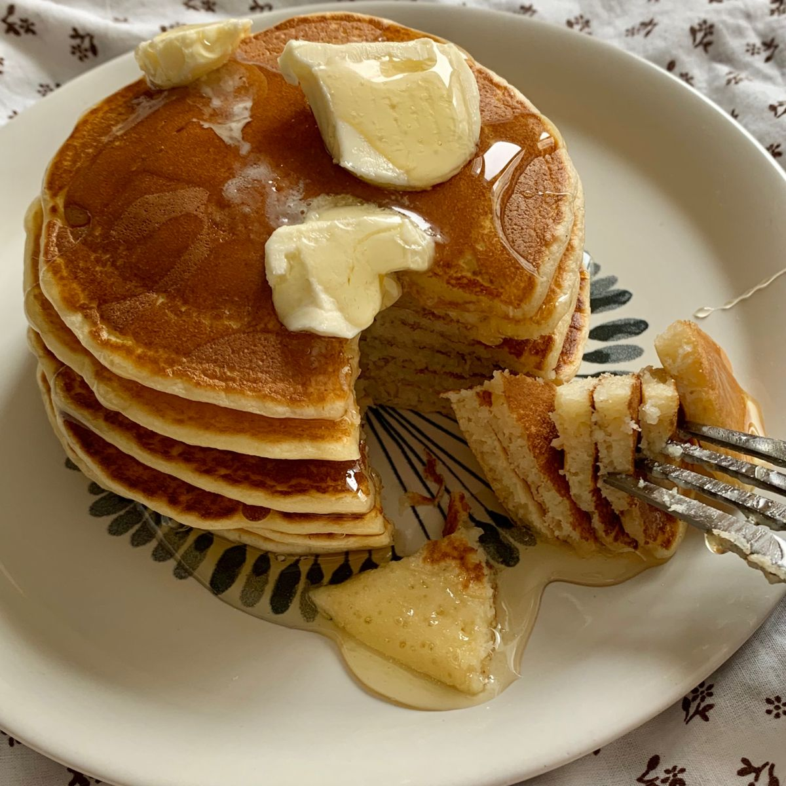

🥞 Panquecas

Uma receita simples e deliciosa para começar o dia de forma especial.
Ver ingredientes e modo de fazer
Ingredientes
- 1 xícara de farinha de trigo
- 1 xícara de leite
- 1 ovo
- 1 colher de açúcar
- 1 colher de manteiga
- 1 colher de fermento
Modo de fazer
- Misture a farinha, o leite, o ovo e o açúcar em uma tigela.
- Acrescente o fermento e misture delicadamente.
- Aqueça uma frigideira e coloque um pouco de manteiga.
- Coloque uma pequena quantidade da massa na frigideira.
- Deixe dourar dos dois lados.
- Repita o processo até terminar a massa.
- Sirva as panquecas com o acompanhamento de sua preferência.